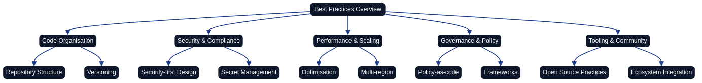

Metodval and erfarenheter

Architecture as Code best practices for Architecture as Code (Architecture as Code) is developed kontinuerligt through practical experience, community feedback and evolving technology landscape. Diagram illustrerar The iterativa processen from initial Architecture as Code-implementation to mature, optimized practices.
Best practices holistiska perspektiv

Mindmappen presenterar the comprehensive landskapet of Best Practices and Lessons Learned within Architecture as Code (Architecture as Code). The shows sambanden between kodorganisation, security- and compliance-pattern, performance-optimering, governance-ramverk and internationella erfarenheter. This holistiska syn helps organisationer to understand how different best practices samspelar to create successful Architecture as Code-Architecture as Code-implementation.
Overall Description
Architecture as Code best praxis represents culmination of collective wisdom from thousands organisationer as has undergone transformation within Architecture as Code over the last decade. These methods is not static rules without evolving guidelines as must adapted to specific organizational context, teknologiska begränsningar and business requirements.
Swedish organizations has bidragit significantly to global Architecture as Code best practice development through innovative approaches to regulatory compliance, sustainable computing and collaborative development models. Companies that Spotify, Klarna and Ericsson has developed patterns as nu is used worldwide for scaling Architecture as Code practices in large, complex organizations.
Lärda läxor from early Architecture as Code adopters reveal common pitfalls and anti-patterns as can undvikas through careful planning and gradual implementation. Understanding these lessons enables organizations to accelerate their Architecture as Code journey while the avoid costly mistakes as previously derailed transformation initiatives.
Modern best practices emphasize sustainability, security-by-design and developer experience optimization alongside traditional concerns as reliability, scalability and cost efficiency. Svenska organizations with strong environmental consciousness and social responsibility values can leverage Architecture as Code for achieving both technical and sustainability goals.
code organisation and modulstruktur
Effective code organization forms foundationen for maintainable and scalable Architecture as Code implementations. Well-structured repositories with clear hierarchies, consistent naming conventions and logical module boundaries enable team collaboration and reduce onboarding time for new contributors.
Repository structure best practices recommend separation of concerns between shared modules, environment-specific configurations and application-specific infrastructure. Swedish government agencies have successfully implemented standardized repository structures as enable code sharing between different departments with the maintain appropriate isolation for sensitive components.
Module design principles emphasize reusability, composability and clear interfaces as enable teams to build complex infrastructure from well-tested building blocks. Effective modules encapsulate specific functionality, provide clear input/output contracts and include comprehensive documentation for usage patterns and configuration options.
Versioning strategies for infrastructure modules must balance stability with innovation durch semantic versioning, immutable releases and clear upgrade paths. Swedish financial institutions have developed sophisticated module versioning approaches as ensure regulatory compliance with the enable continuous improvement and security updates.
Security and compliance patterns
Security-first design patterns have emerged as fundamental requirements for modern Architecture as Code implementations. These patterns emphasize defense-in-depth, principle of least privilege and zero-trust architectures as are implemented through code rather than manual configuration.
Compliance automation patterns for svenska regulatory requirements demonstrate how organizations can embed regulatory controls directly into infrastructure definitions. GDPR compliance patterns for data residency, encryption and audit logging can be codified in reusable modules as automatically enforce regulatory requirements across all deployments.
Secret management best practices have evolved from simple environment variable injection to sophisticated secret lifecycle management with automatic rotation, audit trails and principle of least privilege access. Swedish healthcare organizations have developed particularly robust patterns for protecting patient data according to GDPR and sector-specific regulations.
Security scanning integration patterns demonstrate how security validation can be embedded throughout the infrastructure development lifecycle from development environments to production deployments. Automated security scanning with policy-as-code enforcement ensures consistent security posture without compromising development velocity.
Performance and skalning strategier
Infrastructure performance optimization patterns focus at cost efficiency, resource utilization and response time optimization. Swedish e-commerce companies have developed sophisticated patterns for handling traffic spikes, seasonal variations and flash sales through predictive scaling and capacity planning.
Multi-region deployment patterns for global scalability must consider data sovereignty requirements, latency optimization and disaster recovery capabilities. Swedish SaaS companies serving global markets have pioneered approaches as balance performance optimization with svenska data protection requirements.
Database scaling patterns for Architecture as Code encompass both vertical and horizontal scaling strategies, read replica management and backup automation. Financial services organizations in Sverige have developed particularly robust patterns for managing sensitive financial data at scale with the maintain audit trails and regulatory compliance.
Monitoring and observability patterns demonstrate how comprehensive systems visibility can be embedded in infrastructure definitions. Swedish telecommunications companies have developed advanced monitoring patterns as provide real-time insights into systems performance, user experience and business metrics through infrastructure-defined observability stacks.
Governance and policy enforcement
Governance frameworks for Architecture as Code must balance developer autonomy with organizational control through clear policies, automated enforcement and exception handling processes. Swedish government organizations have developed comprehensive governance models as ensure compliance without stifling innovation.
Policy-as-code implementation patterns demonstrate how organizational policies can be codified, version controlled and automatically enforced across all infrastructure deployments. These patterns enable consistent policy application while the provide transparency and auditability for compliance purposes.
Budget management patterns for cloud infrastructure demonstrate how cost controls can be embedded in infrastructure definitions through resource limits, automated shutdown policies and spending alerts. Swedish startups have developed innovative patterns for managing cloud costs under tight budget constraints with the scale rapidly.
Change management patterns for infrastructure evolution balance stability with agility through feature flags, blue-green deployments and canary releases. Large Swedish enterprises have developed sophisticated change management approaches as enable continuous infrastructure evolution without disrupting critical business operations.
Internationella erfarenheter and svenska bidrag
Global best practice evolution has been significantly influenced of svenska innovations in organizational design, environmental consciousness and collaborative development approaches. Swedish contributions to open source Architecture as Code tools and practices have shaped international standards for sustainable computing and inclusive development practices.
Cross-cultural collaboration patterns from svenska multinational companies demonstrate how Architecture as Code practices can be adapted to different cultural contexts with the maintain technical consistency. These patterns is particularly valuable for global organizations as need to balance local regulations with standardized technical practices.
Sustainability patterns for green computing have been pioneered of svenska organizations with strong environmental commitments. These patterns demonstrate how Architecture as Code can optimize for carbon footprint reduction, renewable energy usage and efficient resource utilization without compromising performance or reliability.
Open source contribution patterns from swedish tech community showcase how organizations can benefit from and contribute to global Architecture as Code ecosystem development. Sustainable open source practices ensure long-term viability of critical infrastructure tools with the foster innovation and knowledge sharing.
Incident management and response patterns
Effective incidenthantering forms a critical komponent for operational excellence within Architecture as Code-environments. When infrastructure are defined as code, requires incidentresponse new approaches as combines traditional operational practices with version control, automation and collaborative development workflows.
Swedish organizations has developed sophisticated incident management patterns as integrerar Architecture as Code practices with emergency response procedures. These patterns emphasize rapid response, transparent communication and systematic learning from each incident to strengthen overall systems resilience.
Modern incident management for Architecture as Code environments requires automated detection, standardized response procedures and comprehensive post-incident analysis. Financial institutions in Sverige has pioneered approaches as maintain service availability with the ensure regulatory compliance under pressure of emergency situations.
Incident response automation patterns enable organizations to respond rapidly to infrastructure failures, security breaches and compliance violations. These patterns incorporate automated rollback mechanisms, emergency approval workflows and real-time stakeholder communication to minimize business impact and recovery time.
Proactive Incident Prevention
Proactive incident prevention strategies focus at identifying and addressing potential issues before the become critical problems. Swedish healthcare organizations have developed comprehensive monitoring patterns as provide early warning signals for infrastructure drift, security vulnerabilities and performance degradation.
Risk assessment integration with Architecture as Code enables organizations to continuously evaluate potential failure scenarios and implement preventive measures. Automated compliance scanning, security vulnerability assessment and performance monitoring provide foundation for proactive incident prevention.
Emergency preparedness exercises specifically designed for Architecture as Code environments help teams practice response procedures, test automation workflows and identify improvement opportunities. Swedish government agencies conduct regular tabletop exercises as simulate complex infrastructure incidents and test coordinated response capabilities.
Incident Response Automation
Automated incident response workflows reduce response time and ensure consistent handling of infrastructure emergencies. Swedish telecommunications companies have developed self-healing infrastructure patterns as automatically detect issues, attempt rewithiation and escalate to human operators when necessary.
Runbook automation for Architecture as Code environments codifies emergency procedures in executable scripts as can be triggered automatically or manually during incidents. These automated runbooks ensure consistent response procedures and reduce human error under pressure.
Communication automation patterns ensure stakeholders receive timely updates during incidents through automated status pages, notification systems and escalation procedures. Svenska financial services organizations have implemented comprehensive communication workflows as maintain transparency with the protect sensitive information.
documentation and knowledge management
Comprehensive documentation strategies for Architecture as Code environments must balance technical detail with accessibility for diverse stakeholders. Effective documentation serves as both reference material for daily operations and knowledge transfer mechanism for organizational continuity.
Svenska organizations have pioneered approaches to living documentation as automatically updates from infrastructure code, deployment logs and operational metrics. This dynamic documentation approach ensures accuracy with reducing maintenance overhead associated with traditional documentation approaches.
Knowledge management patterns for Architecture as Code practices encompass both explicitly knowledge captured in documentation and tacit knowledge embedded in team practices and organizational culture. Successful knowledge management enables organizations to preserve institutional knowledge with facilitating continuous learning and improvement.
Documentation automation patterns demonstrate how comprehensive documentation can be generated directly from infrastructure definitions, deployment procedures and operational runbooks. Swedish SaaS companies have developed sophisticated documentation workflows as maintain up-to-date reference materials without manual intervention.
Architecture Decision Records for Architecture as Code
Architecture Decision Records (ADRs) specifically designed for Architecture as Code decisions provide valuable context for future teams and capture reasoning behind complex technical choices. Swedish government organizations have standardized ADR formats as align with regulatory documentation requirements.
ADR automation patterns enable teams to capture architectural decisions directly in code repositories alongside infrastructure definitions. This co-location approach ensures architectural context remains accessible and relevant for ongoing development activities.
Decision impact tracking through ADRs helps organizations understand long-term consequences of architectural choices and identifies opportunities for optimization or refactoring. Financial institutions in Sverige have developed sophisticated decision tracking approaches as support audit requirements and continuous improvement.
Operational Runbook Management
Operational runbooks for Architecture as Code environments must be executable, testable and version controlled together with infrastructure definitions. Svenska healthcare organizations have developed comprehensive runbook management approaches as ensure procedures remain current and effective.
Runbook testing patterns enable organizations to validate operational procedures regularly through automated testing, simulation exercises and real-world validation. These testing approaches help identify outdated procedures and maintain operational readiness.
Collaborative runbook development patterns encourage input from multiple stakeholders including development teams, operations staff and business representatives. This collaborative approach ensures runbooks address real operational needs and maintain broad organizational support.
Utbildning and competence development
Strategisk competence development for Architecture as Code requires comprehensive training programs as address both technical skills and organizational transformation challenges. Svenska organizations have developed innovative training approaches as combine formal education with practical experience and peer learning.
Cross-functional training patterns break down traditional silos between development, operations and security teams through shared learning experiences and collaborative skill development. These patterns facilitate cultural transformation alongside technical adoption of Architecture as Code practices.
Continuous learning frameworks for rapidly evolving Architecture as Code technologies help teams stay current with emerging tools, techniques and best practices. Swedish tech companies have pioneered approaches as balance formal training with experimentation, community engagement and knowledge sharing.
Skills assessment and career development programs specifically designed for Architecture as Code practitioners help organizations identify skill gaps, plan targeted training interventions and support professional growth for team members.
Praktisk färdighetsträning
Hands-on training environments that mirror production infrastructure enable safe experimentation and skill development without risking operational systems. Svenska financial institutions have developed sophisticated training environments as replicate complex regulatory requirements and business constraints.
Simulation-based training scenarios provide realistic practice opportunities for incident response, deployment procedures and troubleshooting workflows. These scenarios help teams build confidence and competence before facing real operational challenges.
Mentorship programs pair experienced Architecture as Code practitioners with team members developing new skills, facilitating knowledge transfer and accelerating professional development. Swedish government organizations have established formal mentorship structures as support systematic skill development.
Certifiering and standarder
Professional certification paths for Architecture as Code practitioners help establish industry standards and provide career advancement opportunities. Svenska professional organizations have contributed to international certification standards as reflect Nordic approaches to sustainable technology practices.
Internal certification programs developed by large Swedish enterprises provide organization-specific training that aligns with company standards, tools and procedures. These programs ensure consistent skill levels across teams with supporting individual professional development.
Skills validation frameworks enable organizations to assess competency levels, identify training needs and ensure teams have appropriate expertise for managing critical infrastructure. Regular skills assessment helps maintain high operational standards and identify areas for improvement.
Verktygsval and leverantörshantering
Strategic tool selection for Architecture as Code environments requires careful evaluation of technical capabilities, vendor stability, community support and long-term viability. Svenska organizations have developed comprehensive evaluation frameworks as balance imwithiate needs with strategic considerations.
Multi-vendor strategies reduce dependency risks with providing flexibility to adopt best-of-breed solutions for different infrastructure domains. Swedish telecommunications companies have pioneered vendor management approaches as maintain competitive negotiating positions with ensuring operational continuity.
Tool standardization patterns balance organizational consistency with team autonomy through establishing core toolsets with allowing flexibility for specialized use cases. This approach reduces complexity with enabling innovation and optimization for specific requirements.
Vendor relationship management for infrastructure tooling must consider both commercial relationships and open source community engagement. Svenska companies have developed sophisticated approaches as contribute to community development with managing commercial vendor relationships strategically.
technical utvärdering
Comprehensive technical evaluation frameworks help organizations assess infrastructure tools against standardized criteria including functionality, performance, security, reliability and maintainability. Swedish financial services have developed rigorous evaluation processes as incorporate regulatory requirements and risk assessment.
Proof-of-concept development enables hands-on evaluation of tools under realistic conditions before making significant investments. These POCs help identify potential integration challenges, performance limitations and operational considerations as might not be apparent from vendor documentation.
Performance benchmarking for infrastructure tools provides objective data for comparing alternatives and establishing baseline expectations for operational performance. Swedish government agencies have developed standardized benchmarking approaches that support fair evaluation and procurement decisions.
Leverantörsrelationer
Strategic vendor partnership development enables organizations to influence product roadmaps, receive priority support and gain early access to new capabilities. Swedish enterprises have leveraged collective purchasing power through industry consortiums for better vendor terms and shared development costs.
Contract negotiation strategies for infrastructure tooling must balance cost, functionality, support levels and exit provisions. Svenska legal frameworks provide specific considerations for data sovereignty, liability and dispute resolution as influence vendor contract terms.
Vendor performance monitoring and relationship management ensure ongoing value delivery from tooling investments. Regular vendor reviews, performance scorecards and strategic planning sessions help maintain productive partnerships and identify optimization opportunities.
Continuous improvement and innovation
Systematic continuous improvement programs for Architecture as Code environments drive ongoing optimization of processes, tools and outcomes through data-driven decision making and regular retrospectives. Svenska organizations have pioneered improvement frameworks as balance stability with innovation.
Innovation management patterns help organizations balance exploration of new technologies with operational reliability requirements. These patterns provide structured approaches for evaluating emerging tools, techniques and practices with maintaining systems stability and business continuity.
Experimentation frameworks enable safe exploration of new Architecture as Code practices through controlled pilot projects, isolated environments and gradual rollout procedures. Swedish research institutions have developed sophisticated experimentation approaches as accelerate learning with managing risks.
Feedback loop optimization ensures rapid information flow from operational experiences back to development practices, enabling quick adaptation and continuous learning. These loops help organizations respond quickly to changing requirements and emerging opportunities.
Mätning and utvärdering
Comprehensive metrics frameworks for Architecture as Code environments provide visibility into technical performance, business value and operational effectiveness. Svenska companies have developed balanced scorecards as track both technical metrics and business outcomes from Architecture as Code investments.
Performance trending analysis helps organizations identify improvement opportunities and measure progress towards strategic objectives. Historical data analysis reveals patterns, trends and correlations as inform future planning and optimization efforts.
Benchmarking programs both internal and external provide comparative context for performance evaluation and improvement target setting. Swedish industry associations have facilitated collaborative benchmarking initiatives as benefit entire sectors.
Innovation management
Innovation pipeline management for Architecture as Code helps organizations systematically explore emerging technologies with maintaining focus at proven practices for production systems. This balanced approach enables competitive advantage without compromising operational reliability.
Research and development programs specifically focused at Architecture as Code innovations help organizations stay ahead of technology trends and contribute to industry advancement. Svenska universities have partnered with industry for collaborative research as benefits both academic understanding and practical application.
Technology scouting programs identify emerging tools, techniques and practices as might benefit organizational objectives. Regular technology reviews, conference participation and community engagement help organizations maintain awareness of innovation opportunities.
Riskhantering and affärskontinuitet
Comprehensive risk management strategies for Architecture as Code environments must address both traditional operational risks and new risks introduced of code-defined infrastructure. Svenska organizations have developed sophisticated risk frameworks as integrate technical risks with business continuity planning.
Business continuity planning specifically adapted for Architecture as Code environments considers both infrastructure failure scenarios and risks associated with code repositories, deployment pipelines and automation systems. These plans ensure organizations can maintain operations also under complex failure conditions.
Risk assessment integration with Architecture as Code development processes enables proactive identification and mitigation of potential issues before the impact production systems. Automated risk scanning, compliance checking and security assessment provide continuous risk visibility.
Disaster recovery patterns for code-defined infrastructure demonstrate how traditional DR approaches must evolve for environments where infrastructure can be recreated from code repositories. Swedish financial institutions have pioneered DR approaches as leverage Architecture as Code for rapid environment reconstruction.
Affärsimpaktanalys
Business impact analysis for Architecture as Code environments must consider both direct operational impacts and secondary effects from automation failures, code repository compromise or deployment pipeline disruption. Swedish government agencies have developed comprehensive impact assessment frameworks.
Recovery time objectives (RTO) and recovery point objectives (RPO) for Architecture as Code environments require careful consideration of code repository recovery, automation systems restoration and infrastructure recreation procedures. These objectives drive design decisions for backup strategies and recovery procedures.
Critical process identification helps organizations prioritize protection efforts and recovery procedures for most essential business functions. This prioritization ensures limited resources focus at maintaining core business operations under adverse conditions.
Krishantering
Crisis management procedures specifically designed for Architecture as Code environments integrate technical response capabilities with business communication requirements. Svenska enterprises have developed comprehensive crisis management frameworks as coordinate technical and business responses.
Emergency communication plans ensure stakeholders receive appropriate information during infrastructure crises without compromising security or creating additional confusion. These plans include both internal communication protocols and external customer communication strategies.
Crisis leadership structures define clear decision-making authority and escalation procedures for complex infrastructure emergencies. This clarity enables rapid response when traditional approval processes might delay critical recovery actions.
Community engagement and open source bidrag
Strategic community engagement for Architecture as Code enables organizations to both benefit from and contribute to broader ecosystem development. Svenska companies have established leadership positions in global Architecture as Code communities through consistent, valuable contributions and collaborative partnership approaches.
Open source contribution strategies help organizations share innovations, attract talent and influence technology direction with building industry relationships and enhancing organizational reputation. These contributions position Swedish organizations as thought leaders in global infrastructure automation community.
Knowledge sharing patterns demonstrate how organizations can participate in community development without compromising competitive advantages or intellectual property. Swedish government agencies have pioneered open source approaches as promote transparency and collaboration according to public sector values.
Community partnership development enables access to broader expertise, shared development costs and collective problem-solving capabilities. Swedish enterprises have leveraged community relationships for accelerated innovation and reduced technology risks.
Bidragsstrategi
Systematic contribution planning helps organizations identify valuable ways to contribute to open source projects with advancing their own technical objectives. Svenska tech companies have developed contribution strategies as align community engagement with business goals and technical roadmaps.
Intellectual property management for open source contributions requires clear policies and procedures as protect organizational interests with enabling community participation. These policies provide guidelines for what can be shared, how contributions are licensed and how potential conflicts are resolved.
Employee engagement in open source communities provides professional development opportunities, industry visibility and access to cutting-edge knowledge. Swedish companies have established programs as encourage and support employee community participation.
Samarbete and partnerskap
Industry collaboration initiatives enable svenska organizations to collectively address common challenges, share development costs and influence standards development. These partnerships leverage collective expertise for solving complex problems as individual organizations might struggle with alone.
Research partnerships with academic institutions provide access to advanced research, student talent and long-term perspective at technology evolution. Svenska universities have established strong collaboration programs with industry partners for mutual benefit.
International collaboration enables Swedish organizations to participate in global standards development, share Nordic perspectives and build relationships with international partners. This global engagement enhances Swedish influence in international technology development and provides access to worldwide expertise.
Continuous improvement and development
Continuous improvement of Architecture as Code-praktiker requires systematic approach to learning, adaptation and evolution. Diagram illustrerar feedback loops between praktisk erfarenhet, teknologisk development and organisatorisk maturity as driver sustainable Architecture as Code transformation.
successful Architecture as Code-implementation is not A one-time projekt without a continuous journey of learning, adaptation and refinement. Swedish organizations as has achieved sustainable Architecture as Code success understand to best practices must evolve continuously based on changing technology landscape, business requirements and lessons learned from real-world implementation challenges.
Lärande from misslyckanden and incidenter
Organisatorisk maturity within Architecture as Code development will främst from systematic learning from failures, incidents and unexpected challenges as arises under practical implementation. Svenska tech companies that Spotify and Klarna has developed sophisticated incident response frameworks as treat infrastructure failures as valuable learning opportunities rather than simple problems to fix.
Incident retrospectives for infrastructure-related issues should focus at root cause analysis of both technical and process failures. Common patterns as emerge from svenska organizations include inadequate testing in staging environments, insufficient monitoring of infrastructure changes and poor communication between development and operations teams during critical deployments.
Blameless postmortem culture, pioneered of svenska tech organizations, enables teams to share failure experiences openly and extract valuable insights without fear of retribution. These cultural practices have proven essential for building organizational confidence in complex infrastructure automation while maintaining high reliability standards for customer-facing services.
Documentation of failure patterns and their solutions creates organizational knowledge base as enables future teams to avoid repeating samme mistakes. Swedish government agencies have developed particularly robust failure analysis processes as ensure critical infrastructure lessons are captured and shared across different departments and projects.
Anpassning to new technologies
Technology evolution within cloud computing and infrastructure automation requires organizations to continuously evaluate and integrate new tools, services and methodologies into their existing Architecture as Code practices. Svenska organizations must balance innovation adoption with stability requirements, particularly in regulated industries where change control processes are strictly enforced.
Technology evaluation frameworks help organizations assess new Architecture as Code tools and platforms based at criteria as include technical capabilities, security implications, cost considerations and integration complexity with existing systems. Early adopter programs within svenska tech companies enable careful experimentation with emerging technologies before broad organizational adoption.
Gradual technology migration strategies minimize risk during platform transitions with the enable organizations to benefit from technological improvements. Svenska financial institutions have developed particularly sophisticated migration approaches as ensure regulatory compliance and operational continuity during major infrastructure platform changes.
Community engagement with open source projects and technology vendors provides svenska organizations with early insights into emerging trends and upcoming capabilities. Active participation in technology communities also enables svenska companies to influence technology development directions based on their specific requirements and use cases.
Mognadsnivåer for Architecture as Code-implementation
Organizational maturity models for Architecture as Code help teams understand their current capabilities and plan systematic improvement paths toward more sophisticated implementation practices. Svenska organizations have contributed significantly to these maturity frameworks through their emphasis at sustainability, collaboration and long-term thinking.
Initial Level organizations typically begin with manual infrastructure management and limited automation. Focus at this level is establishing basic version control, simple automation scripts and foundational monitoring capabilities. Swedish government agencies often start here when transitioning from traditional IT management approaches.
Developing Level organizations implement comprehensive Architecture as Code practices with automated deployment pipelines, systematic testing and basic policy enforcement. Most svenska Medium-sized companies reach this level within their first year of serious Architecture as Code adoption, typically achieving 70-80% infrastructure automation coverage.
Advanced Level organizations achieve full automation coverage with sophisticated governance frameworks, comprehensive security automation and advanced monitoring capabilities. Large svenska enterprises that Ericsson and H&M have reached this level through multi-year transformation programs and significant investment in tooling and training.
Optimizing Level organizations demonstrate self-improving infrastructure systems with predictive monitoring, automatic optimization and advanced AI-driven operations. Only a few svenska organizations have achieved this level, typically large-scale cloud-native companies with substantial investment in cutting-edge automation technologies.
Förändringshantering for evolving praktiker
Change management for evolving Architecture as Code practices requires careful balance between innovation adoption and operational stability. Svenska organizations excel at collaborative change management approaches as emphasize consensus building, gradual implementation and comprehensive stakeholder engagement throughout transformation processes.
Communication strategies for infrastructure changes must accommodate different stakeholder groups with varying technical backgrounds and risk tolerances. Swedish consensus culture provides natural framework for building broad organizational support for Architecture as Code evolution, though it whichetimes slows rapid technology adoption compared to more hierarchical organizational structures.
Training and competence development programs ensure to team members can effectively utilize evolving Architecture as Code tools and practices. Svenska organizations typically invest heavily in employee development, with comprehensive training programs as combine technical skills with organizational change management capabilities.
Feedback mechanisms from development teams, operations teams and business stakeholders provide essential insights for refining Architecture as Code practices and identifying areas for further improvement. Regular retrospectives, surveys and collaborative review sessions help svenska organizations maintain alignment between technical capabilities and business requirements as both evolve over time.
Gemenskapsengagemang and kunskapsdelning
Active participation in global Architecture as Code communities enables svenska organizations to benefit from collective wisdom with the contribute their own innovations and insights. Svenska tech community has traditionally been very active in open source contribution and knowledge sharing, particularly in areas as environmental sustainability and inclusive development practices.
Internal communities of practice within larger svenska organizations facilitate knowledge sharing between different teams and business units. These communities help propagate successful patterns, share lessons learned and coordinate technology adoption decisions across organizational boundaries.
External knowledge sharing through conferences, blog posts and open source contributions strengthens svenska tech community and enhances the country's reputation for innovation in infrastructure automation. Companies as publish their Architecture as Code practices and tools contribute to global best practice development with the attract talent and partnerships.
Mentorship programs for Architecture as Code practitioners help accelerate individual skill development and ensure knowledge transfer between experienced and emerging infrastructure professionals. Svenska organizations have developed particularly effective mentorship approaches as combine technical training with broader professional development support.
Svenska organisationsexempel at continuous improvement
Klarna has demonstrated exceptional commitment to continuous Architecture as Code improvement through their evolution from traditional deployment practices to fully automated, scalable infrastructure management. Their journey illustrates how financial services companies can achieve both regulatory compliance and rapid innovation through systematic infrastructure automation maturity development.
Spotify exemplifies how continuous improvement culture extends to infrastructure practices through their famous "fail fast, learn fast" philosophy. Their approach to infrastructure experimentation and rapid iteration has influenced global best practices for balancing innovation with reliability in large-scale consumer-facing services.
Ericsson showcases how traditional technology companies can successfully transform their infrastructure practices through multi-year maturity development programs. Their experience demonstrates that even large, established organizations can achieve significant Architecture as Code transformation through sustained commitment to gradual improvement and employee development.
Swedish Government Digital Service (DIGG) illustrates how public sector organizations can implement modern Architecture as Code practices with maintaining strict security and compliance requirements. Their approach demonstrates that government agencies can achieve both operational efficiency and regulatory compliance through thoughtful Architecture as Code adoption and continuous improvement practices.
Summary
The modern Architecture as Code methodology represents framtiden for infrastructure management in Swedish organizations. Best practices for Architecture as Code represents accumulated wisdom from global community of practitioners as has navigerat challenges of scaling infrastructure management at enterprise level. Swedish organizations has contributed significantly to these practices through innovative approaches to compliance, sustainability and collaborative development.
Effective implementation of Architecture as Code best practices requires balanced consideration of technical excellence, business value, regulatory compliance and environmental responsibility. Svenska organizations as embrace comprehensive best practice frameworks position themselves for sustainable long-term success in rapidly evolving technology landscape.
Continuous evolution of best practices through community contribution, experimentation and learning from failures ensures that Architecture as Code implementations remain relevant and effective as technology and business requirements continue to evolve. Investment in best practice adoption and contribution delivers compounding value through improved operational efficiency, reduced risk and enhanced innovation capability.
Sources and referenser
- Cloud Native Computing Foundation. "Infrastructure as Code Best Practices." CNCF, 2023.
- HashiCorp. "Terraform Best Practices Guide." HashiCorp Documentation, 2023.
- AWS. "Well-Architected Framework for Architecture as Code." Amazon Web Services, 2023.
- Google. "Site Reliability Engineering Best Practices." Google SRE Team, 2023.
- Puppet. "Infrastructure Automation Best Practices." Puppet Labs, 2023.
- Swedish Cloud Association. "Cloud Best Practices for Swedish organizations." SWCA, 2023.